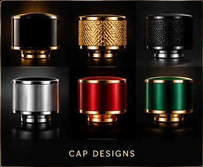
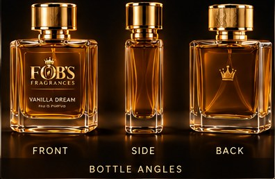
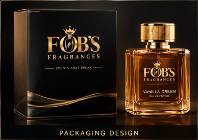
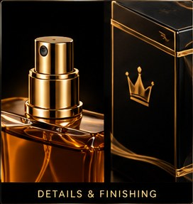

FOBS FRAGRANCES
The pour
Scent should not shout. It should settle.
Warm amber. A little wine. Evening light.
Notes that stay close to the skin.
One pour, all evening.
Warm amber that settles into the skin, carried low, still faint at midnight.
The pour, on film
Four stills from the night.




The one idea
One idea, threaded through every pour: scent that stays.
A scent is personal when it stays close. FOBS is a warm amber carried on the skin, not a cloud that fades by afternoon. It works the way good perfume used to work.
The pour, in three notes
Top
Amber spark and evening air.
Heart
Warm caramel, dry cedar, a hint of wine.
Base
Musk and amber that stay on the skin till midnight.
Press and hold to let the scent settle.
Hold through the amber pool filling.
Settled. The evening is yours.
What people say
A colleague stopped me in the hallway and asked what I was wearing.
Every perfume I tried faded by noon. This one stays.
I catch myself sniffing my wrist at midnight.
Fair questions
Asked and answered.
Does it actually last?
Yes, that is the point. It sits on skin, not in the air, so it holds hours past most scents. Expect it still faint on your wrist at midnight.
Why so expensive compared to a mist or a designer bottle?
Because it is a real parfum: a high concentration of amber and musk, hand-poured in small batches. Lasts longer on skin, so a bottle lasts you months.
Will I use it, or let it sit on a shelf?
Sample first, spend second. If the warm amber is not yours, the sample set costs little and tells you fast.
What does it smell like, exactly?
Warm caramel and dry cedar over amber and musk, with a wine-dark warmth. Dusk light in a bottle. Close, never loud.
Can I try it before the full bottle?
Yes. The sample set holds three wearings each, enough to live with it for a week.
Get the bottle
Sample first, or go straight to the pour.
Sample set first, or go straight to the full pour. Either way it arrives wrapped like an evening.